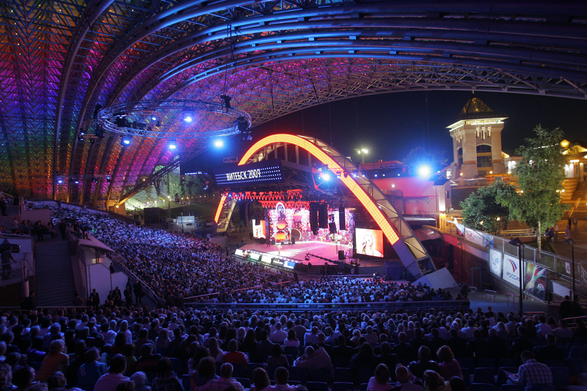

Славянский базар — ежегодный международный фестиваль искусств, который проходит в Витебске с 1992 года.
Фестиваль задуман как общее культурное мероприятие трех стран: Беларуси, России, Украины. Отличительной
чертой фестиваля является международный конкурс исполнителей эстрадной песни и международный детский
музыкальный конкурс (с 2003 года). С 1993 года «Славянский базар» является членом FIDOF. Помимо конкурсов,
на фестивале широко представлена не только песенная культура, но и разнообразные виды искусств — изобразительное,
театральное, кино, народные ремесла. Фестивальные дни включают творческие встречи с различными деятелями
мировой культуры, презентации театральных постановок и кинолент, художественные выставки, а также ярмарки
с участием мастеров-ремесленников.
«Славянский базар в Витебске» позиционирует себя как «долгосрочная, крупномасштабная, межгосударственная
культурная акция Союза России и Беларуси, которая ориентирована на объединение многонациональных творческих
сил, всего самого ценного, чем славится каждая из национальных культур, на взаимодействие и взаимопроникновение
различных культур, духовное единение народов мира, создание мирного сообщества. Фестиваль имеет открытый
массовый характер, способствует возрождению и развитию художественной культуры и искусства в целом».
Фест призван поддерживать молодые таланты и новаторство в искусстве.